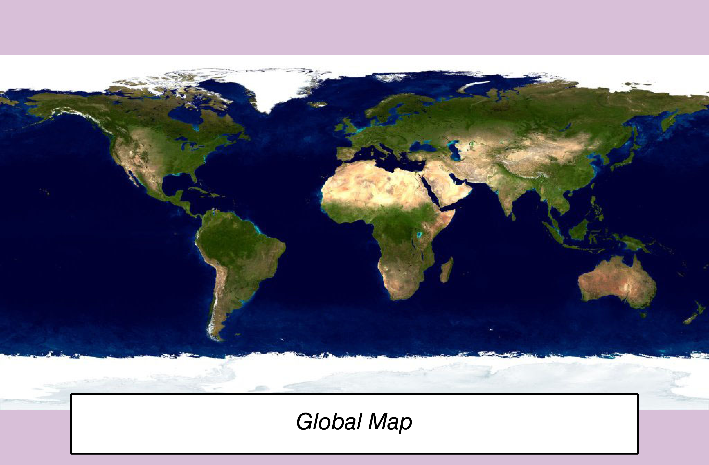

The WINDOW function creates an empty graphics window. The WINDOW function is useful if you want to set up a graphics area, perhaps add some text or polygon annotations, and then later add graphics.

The following lines create the window shown at the top of this topic.
; Create the window
w = WINDOW(WINDOW_TITLE="My Window", $
DIMENSIONS=[500,300])
; Set some properties
w.BACKGROUND_COLOR = "thistle"
; Add some annotations
p = POLYGON([50,450,450,50],[50,50,8,8],0, /DEVICE)
t = TEXT(250, 25, "$\it Global Map$", $
ALIGNMENT=0.5, /DEVICE)
mapimage = FILEPATH('Day.jpg', $
SUBDIRECTORY=['examples','data'])
i = image(mapimage, /OVERPLOT)
graphic = WINDOW( )
The WINDOW function returns a reference to the created graphic window. Use the returned reference to manipulate the window after creation by changing properties or calling methods.
None.
Properties marked as (Init) are applied only during the initial creation of the graphic. All other properties can be set during creation, or retrieved or changed after creation.
A floating point value indicating the ratio of the Y dimension to the X dimension in data units. If this property is set to a nonzero value, the aspect ratio will be preserved as the graphic is stretched or shrunk. The default value is 0 for all graphics except images, meaning that the aspect ratio is not fixed, but is allowed to change as the graphic is stretched or shrunk.
For 3-D graphics, a floating point value indicating the ratio of the Z dimension to the X and Y dimensions, in data units. If this is a nonzero value, the aspect ratio will be preserved as the graphic is stretched or shrunk. The default value is 0, meaning that the aspect ratio is not fixed, but is allowed to change as the graphic is stretched or shrunk.
Set this property to one of the following values:
You can set the following properties on the axes:
|
Property |
Description |
|
[XYZ]COLOR |
A string or RGB vector containing the axis color. |
|
[XYZ]GRIDSTYLE |
A string or integer giving the linestyle for tickmarks. |
|
[XYZ]LOG |
Set to 1 if the axis is logarithmic. |
|
[XYZ]MAJOR |
The number of major tick marks. Set to -1 to auto-compute, set to 0 to suppress. |
|
[XYZ]MINOR |
The number of minor tick marks. Set to -1 to auto-compute, set to 0 to suppress. |
|
[XYZ]SHOWTEXT |
Set to 1 to show text labels or 0 to hide the text labels. |
|
[XYZ]STYLE |
The axis range style. The valid values are: (0) "Nice" range. Default for all graphics except Image, Barplot, and Map. (1) Force the exact data range. Default for Image, Barplot, and Map. (2) Pad the axes slightly beyond the "nice" range. (3) Pad the axes slightly beyond the exact data range. Note - The [XYZ]RANGE takes precedence over this property. |
|
[XYZ]SUBTICKLEN |
The ratio of the minor tick length to the major tick length. The default is 0.5. |
|
[XYZ]TEXT_COLOR |
A string or RGB vector containing the axis text color. |
|
[XYZ]TEXTPOS |
Set to 1 to position text above the axis. The default is 0, below the axis. |
|
[XYZ]THICK |
Set to a floating-point value between 0 and 10 to specify the line thickness for tickmarks. A thickness of 0 gives a thin hairline. The default is 1. |
|
[XYZ]TICKDIR |
Set to 1 to draw the tickmarks facing outwards. The default is 0, facing inwards. |
|
[XYZ]TICKFONT_NAME |
A string containing the font name for the axis text. |
|
[XYZ]TICKFONT_SIZE |
The axis text size in points. |
|
[XYZ]TICKFONT_STYLE |
A string or integer containing the font style: "normal" (0), "bold" (1), "italic" (2), or "bold italic" (3). |
|
[XYZ]TICKFORMAT |
A string or string array of tick label formats. |
|
[XYZ]TICKINTERVAL |
The interval between major tick marks. |
|
[XYZ]TICKLAYOUT |
Set to 1 to suppress tick marks; set to 2 to draw a box around the tick labels. |
|
[XYZ]TICKLEN |
The normalized length of each major tick mark. Tick lengths < 0.25 are in arbitrary units that do not scale with the graphic. Larger tick lengths are normalized relative to the width of the graphic. The default is 0.05. |
|
[XYZ]TICKNAME |
A string array containing the tick labels. |
|
[XYZ]TICKUNITS |
A string giving the tick units. Valid values are "" (the default), "Years", "Months", "Days", "Hours", "Minutes", "Seconds", or "Time". If any of the time units are utilized, then the tick values are interpreted as Julian date/time values. If more than one unit is provided, the axis will be drawn with multiple levels. |
|
[XYZ]TICKVALUES |
An array of tick mark locations. |
|
[XYZ]TITLE |
A string giving the axis title. |
|
[XYZ]TRANSPARENCY |
An integer from 0-100 giving the percent transparency. |
For more detailed explanations of these properties, see the AXIS function.
Tip: You can also use the AXIS function to insert additional axes after the graphic has been created.
The window's background color. The default value is "white".
Set this property to 1 to direct the graphics to an off-screen buffer instead of creating a window.
Set this property to create the graphic in the current window. If no window exists, a new window is created.
Set this property if values are specified in device coordinates (pixels) for the MARGIN and POSITION properties. (Normalized coordinates are the default for these properties.)
Set this property to a two-element vector of the form [width, height] to specify the window dimensions in pixels.
Set this property equal to the title text color. The default value is "black".
This property is ignored if TITLE is not specified.
Set this property equal to a string specifying the IDL or system font for the title text. The default value is “Helvetica”.
This property is ignored if TITLE is not specified.
Set this property equal to an integer specifying the font size for the title text. The default value is 16 points.
This property is ignored if TITLE is not specified.
Set this property equal to an integer or a string specifying the font style for the title text. Allowed values are:
|
Integer |
String |
Resulting Style |
|
0 |
"Normal" or "rm" |
Default (roman) |
|
1 |
"Bold" or "bf" |
Bold |
|
2 |
"Italic" or "it" |
Italic |
|
3 |
"Bold italic" or "bi" |
Bold italic |
This property is ignored if TITLE is not specified.
Set this property to 1 to hide the graphic. Set HIDE to 0 to show the graphic.
Set this property to the name of a function that will be called when a key is pressed or released. Please see Creating Keyboard Event Functions for details on how to write these functions.
Set this property to a three-element vector [ncol, nrow, index] that arranges graphics in a grid. The first dimension ncol is the number of columns in the grid, nrow is the number of rows, and index is the grid position at which to place the graphic (starting at element 1). This property is ignored if either OVERPLOT or POSITION is specified.
Set this property to a two-element vector [X offset, Y offset] giving the window's screen offset in pixels.
Set this property to the current graphic’s margin values in the layout specified by the LAYOUT property. Use a scalar value to set the same margin on all sides, or use a four-element vector [left, bottom, right, top] to specify different margins on each side.
By default, margin values are expressed in normalized units ranging from 0.0 to 0.5. If the DEVICE property is set, the values are given in device units (pixels).
This property is ignored if either OVERPLOT or POSITION is specified.
Set this property to the name of a user-defined function that is called when the mouse button is pressed. See Creating Mouse Event Functions for details on how to write these functions.
Set this property to the name of a user-defined function that is called when the mouse is moved. See Creating Mouse Event Functions for details on how to write these functions.
Set this property to the name of a user-defined function that is called when the mouse button is released. See Creating Mouse Event Functions for details on how to write these functions.
Set this property to the name of a user-defined function that is called when the mouse wheel is moved. See Creating Mouse Event Functions for details on how to write these functions.
A string that specifies the name of the graphic. The name can be used to retrieve the graphic using the brackets array notation. If NAME is not set then a default name is chosen based on the graphic type.
Set this property to 1 (one) to place the graphic on top of the existing graphic in the current window. If no current window exists, a new window is created.
Set this property to an existing IDL Graphic reference to direct the new graphic to the window specified by the provided IDL Graphic reference.
Set this property to a four-element vector that determines the location of the visualization within the graphic window. The coordinates x0, y0 represent the lower left and x1, y1 represent the upper right corners of the data space. Coordinates are expressed in normalized units ranging from 0.0 to 1.0. If the DEVICE property is set, the units are given in device units (pixels).
Note: When using POSITION, factor in enough space to display the title and axis labels. For example, if you use POSITION to place your visualization at 0 on the X or Y axis, any labels for that axis will not be visible.
Set this property to the name of a function that is called when a graphic is selected or deselected. See Creating Selection Change Event Handlers for details on how to write these functions.
Set this property to a string specifying a title. If TITLE is specified, you can also specify any of the FONT_COLOR, FONT_NAME, FONT_SIZE, and FONT_STYLE properties to control the title appearance.
You can also add Greek letters and mathematical symbols using a TeX-like syntax. These symbols need to be enclosed within a pair of "$" characters.
Set this property to an IDL variable of any data type.
Set this property to the title of the IDL Graphic window. The title is displayed in the window's title bar.
| 8.0 | Introduced |
| 8.1 |
Properties added: KEYBOARD_HANDLER, MOUSE_DOWN_HANDLER, MOUSE_MOTION_HANDLER, MOUSE_UP_HANDLER, MOUSE_WHEEL_HANDLER, SELECTION_CHANGE_HANDLER, UVALUE, [XYZ]SHOWTEXT, [XYZ]STYLE Keywords added: GetSelect, HitTest Methods added: GetSelect, HitTest, Show |
PLOT, Using IDL Graphics, GETWINDOWS
WINDOW WINDOW WINDOW WINDOW WINDOW WINDOW WINDOW WINDOW WINDOW WINDOW WINDOW WINDOW WINDOW WINDOW WINDOW WINDOW WINDOW WINDOW WINDOW WINDOW WINDOW WINDOW WINDOW WINDOW WINDOW WINDOW WINDOW WINDOW WINDOW WINDOW WINDOW WINDOW WINDOW WINDOW WINDOW WINDOW WINDOW WINDOW WINDOW WINDOW WINDOW WINDOW WINDOW WINDOW WINDOW WINDOW WINDOW WINDOW WINDOW WINDOW WINDOW WINDOW WINDOW WINDOW WINDOW WINDOW WINDOW WINDOW WINDOW WINDOW WINDOW WINDOW WINDOW WINDOW WINDOW WINDOW WINDOW WINDOW WINDOW WINDOW WINDOW WINDOW WINDOW WINDOW WINDOW WINDOW WINDOW WINDOW WINDOW WINDOW WINDOW WINDOW WINDOW WINDOW WINDOW WINDOW WINDOW WINDOW WINDOW WINDOW WINDOW WINDOW WINDOW WINDOW WINDOW WINDOW WINDOW WINDOW WINDOW WINDOW WINDOW WINDOW WINDOW WINDOW WINDOW WINDOW WINDOW WINDOW WINDOW WINDOW WINDOW WINDOW WINDOW WINDOW WINDOW WINDOW WINDOW WINDOW WINDOW WINDOW WINDOW WINDOW WINDOW WINDOW WINDOW WINDOW WINDOW WINDOW WINDOW WINDOW WINDOW WINDOW WINDOW WINDOW WINDOW WINDOW WINDOW WINDOW WINDOW WINDOW WINDOW WINDOW WINDOW WINDOW WINDOW WINDOW WINDOW WINDOW WINDOW WINDOW WINDOW WINDOW WINDOW WINDOW WINDOW WINDOW WINDOW WINDOW WINDOW WINDOW WINDOW WINDOW WINDOW WINDOW WINDOW WINDOW WINDOW WINDOW WINDOW WINDOW WINDOW WINDOW WINDOW WINDOW WINDOW WINDOW WINDOW WINDOW WINDOW WINDOW WINDOW WINDOW WINDOW WINDOW WINDOW WINDOW WINDOW WINDOW WINDOW WINDOW WINDOW WINDOW WINDOW WINDOW WINDOW WINDOW WINDOW WINDOW WINDOW WINDOW WINDOW WINDOW WINDOW WINDOW WINDOW WINDOW WINDOW WINDOW WINDOW WINDOW WINDOW WINDOW WINDOW WINDOW WINDOW WINDOW WINDOW WINDOW WINDOW WINDOW WINDOW WINDOW WINDOW WINDOW WINDOW WINDOW WINDOW WINDOW WINDOW WINDOW WINDOW WINDOW WINDOW WINDOW WINDOW WINDOW WINDOW WINDOW WINDOW WINDOW WINDOW WINDOW WINDOW WINDOW WINDOW WINDOW